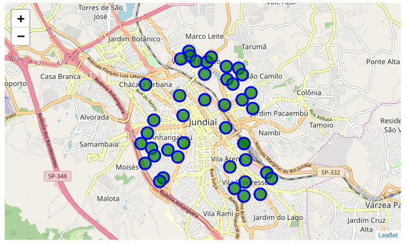
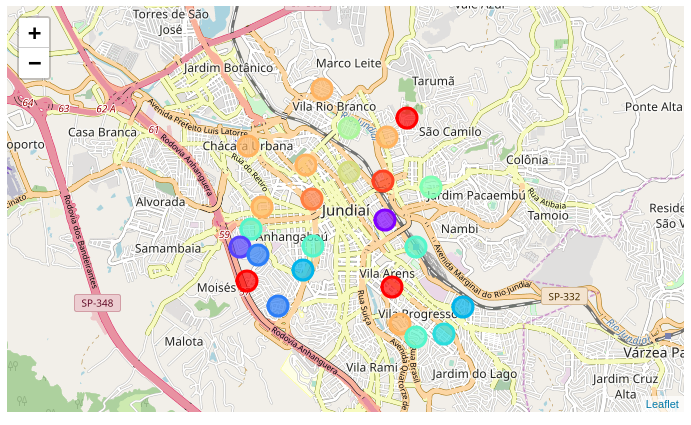
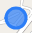
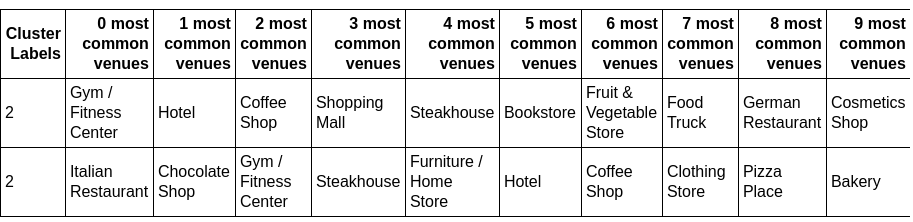
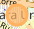
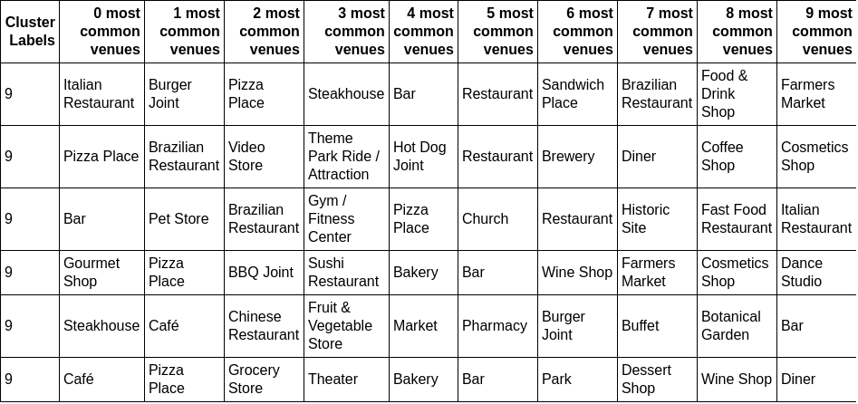

Jundiaí's Clustering: creating profiles of Neighbourhoods
Introduction
This project idea is to cluster neighbourhoods of some boroughs in the Jundiaí
city, located in the state of São Paulo, Brazil. The clusters will be made using
the venues information of each neighbourhood to discover they profile and to
give to business owners the knowledge that can help the growth of
business/venues or creation of new business/venues. Not just that, this
knowledge can help people of my city (or other city) to learn more about it,
knowing some aspects of each neighbourhood, helping they, eg "wich kind of
venues will be found in that neighbourhood?". To do that, I'll create the clusters
of the following boroughs:
- Centro (the center of the city);
- Anhangabaú (west of the center);
- Ponte São João (east of the center);
- Vila Rio Branco (north of the center); and
- Vila Arens (south of the center).
Data acquision
This project will use a dataset that will be collected by my self, about
neighbourhoods of the boroughs mentioned above. This dataset will be made
of:
The dataset do not exist yet, but this is an example of how it will be formatted:
| ID |
Borough |
Neighbourhood |
Latitude |
Longitude |
- ID: generated ID
- Borough: the name of Borough
- Neighbourhood: the name of Neighbourhood
- Latitude: Neighbourhood's latitude
- Longitude: Neighbourhood's longitude
The venues information will be fetched from Foursquare API, and will be made by the following columns:
| ID |
Venue |
Category |
Latitude |
Longitude |
- ID: The Venue's Neighbourhood ID (the same ID of the neighbourhoods dataset
- Venue: Name of the venue
- Category: the categor of the venue
- Latitude: Venue's latitude
- Longitude: Venue's longitude
Borough and Neighbourhood dataset
The entire boroughs and neighbourhoods dataset was extracted from the Town
Hall website, in form of PDF. So, the extraction, in this case, was manually,
cause the amount of data to extract is small.
Latitude and Longitude Coordenates of every Neighbourhood
Geopy (Nominatim) was the API used to fetch latitude and longitude
coordenates of each neighbourhood. However, not every neighbourhood has
these coordenates registred in nominatim server. So, these neighbourhood
without coordenates was removed from the dataset.
Venues location data
The Foursquare API was used to fetch the venues location data, but, it has
problems. The neighbourhoods of this city is só close that one venue can
belong to two or more neighbourhoods. So, to fix this, I loop through every
venue and compared venue coordenates with neighbourhoods coordenates
and, assigned the venue to the closest neighbourhood.
Methodology
First, the city map with each neighbourhood from the generated dataset.

The methodology aplied in this project is to cluster the neighbourhood of the
refered city to discover their profiles. There are many ways and algorithms to
do this. This project uses the Kmeans algorithm, that cluster objects based on
they distance. More intra-distance means that two objects should be of the
same cluster. More inter-distance means that two objects should be of different
clusters.
I used the SciKit Learn library to apply the Kmeans to the cleaned data. The
Kmeans algorithm needs to be initialized with a constant that defines the
number of clusters to be created. Trying the values of this constant (K), I found
that K = 12 was a good value, it seems to generate meaninfully clusters.
With this, I was able to generate labels to each neighbourhood, assigning it to a
cluster. And finally, I was able to plot the graph with folium library, showing
clusters in colors (same color means same cluster), as show below.

Results
I was able to create a profile of the city neighbourhoods with meaningfully
clusters. But, because of a poor location data about my city (small city) I’m
unable to generate more interesting information.
I found interestings clusters, the clusters number 2 and 9, that has some
interesting caracteristics.
Cluster 2 
Seems to be made of gym, hotel and coffee shops/shoppings. So, it's primarly a "touristic" cluster.

Cluster 9 
seems to be kind of region with shops and some restaurants

Discussion
This project showed that this city has a bunch of space to grow in data location
(web designs should be happy) and that have a caracteriscts of towns, not
cities. It’s an simple city with fews venues.
Conclusion
In this project I build a cluster map of the Jundiaí city (in state of São Paulo,
Brazil) that can help business owners to better manage they business and tohave ideas where to open a new business. Thus, the citzen of the city can
understanding the profiles of neighbourhoods and decide where to move when
needing some venue.